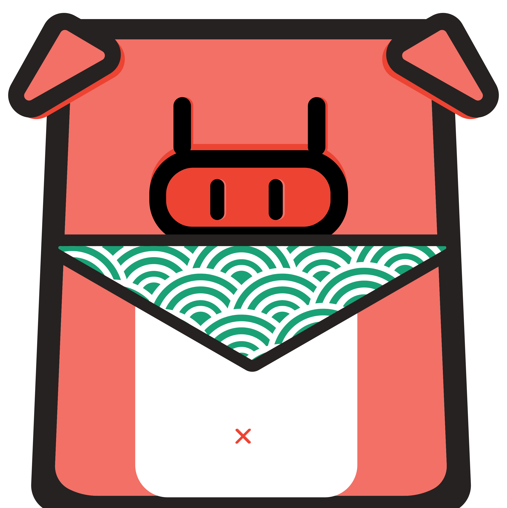

天网加载中 (大约1分钟, 大小40MB)...
Model加载错误 😢
如果你使用的是iPhone，请切换到Safari浏览器.
请将摄像头对准某一物体，识别过程需要一点时间（可识别物体包含:人，键盘，手机，车，宠物等）
此动态模型使用
Tensorflow.js
和Tiny YOLO建立
可利用user的本地摄像头来识别物体，识别情况实时更新。注：所有程序都是本地完成，手机的话GPU不太强大，所以识别会非常慢，大概每次识别都是一帧一帧地识别。
Save